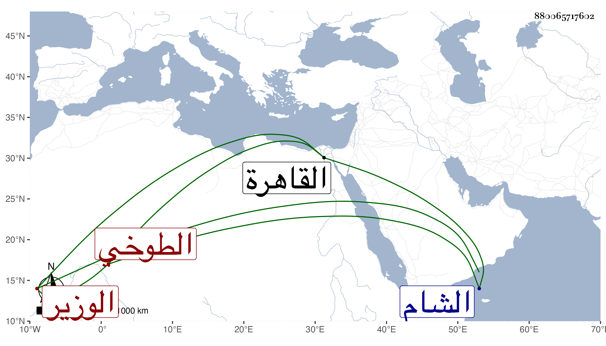

0902Sakhawi.DawLamic.ITO20230111-ara1.EIS1600.880065717602
Biography ID: 880065717602
100
محمد بن محمد البدر الطوخي الوزير . ولي وزارة الشام ثم القاهرة مرارا ولم يكن متكلفا في وزارته كان يركب معه الواحد وغلامه وراءه لكنه كان ناهضا في مباشرته ويكثر الحج أيام عطلته . مات معزولا في سنة سبع وقد جاز السبعين . ذكره شيخنا في إنبائه باختصار عما هنا .
